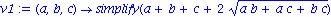

Apollonian Gasket Calculations
First, here's the Saudi Equation
| > | 2*(a^2 + b^2 + c^2 + d^2) = (a+b+c+d)^2; |

Suppose that for a given (a,b,c), both d and d' are solutions this equation:
| > | 2*(a^2 + b^2 + c^2) + 2*d^2 = (a+b+c)^2 + 2*d*(a+b+c) + d^2;
2*(a^2 + b^2 + c^2) + 2*d^2 - (a+b+c)^2 - 2*d*(a+b+c) - d^2 = 0; d^2 - (2*a + 2*b + 2*c)*d + 2*(a^2 + b^2 + c^2) - (a+b+c)^2 = 0; |
So then:
| > | d + dprime = 2*a + 2*b + 2*c;
d * dprime = 2*(a^2 + b^2 + c^2) - (a+b+c)^2; |
Next define a function u which takes in four cluster variables and return the exchange for the fourth.
| > | u := (a,b,c,d) -> simplify(2*a + 2*b + 2*c - d); |
Clusterfy u into a 4-cluster.
| > | e := (w,x,y,z) -> (u(x,y,z,w),x,y,z);
f := (w,x,y,z) -> (w,u(w,y,z,x),y,z); g := (w,x,y,z) -> (w,x,u(w,x,z,y),z); h := (w,x,y,z) -> (w,x,y,u(w,x,y,z)); |
Some things we can are downright meaingless: For instance:
| > | e(x,x,x,x); |
doesn't mean anything. Can you imagine four circles that all have the same radius kissing? No. So we define.
| > | v1 := (a,b,c) -> simplify(a+b+c + 2*(a*b+a*c+b*c)^(1/2));
v2 := (a,b,c) -> simplify(a+b+c - 2*(a*b+a*c+b*c)^(1/2)); |

So if we had three circles with radius x,y, and z, we can let w be the inner circle for the kiss of x, y, and z.
| > | w := v1(x,y,z); |
But we want simpler looking equations, so let M = (xy+xz+yz)^(1/2):
| > | w := x+y+z+2*M; |
Then we can look at some of the clusters that are accessible form this cluster.
| > | (w,x,y,z);
e(w,x,y,z); e(f((w,x,y,z))); e(f(e(w,x,y,z))); e(e(f(e(w,x,y,z)))); h(h(e(f(e(w,x,y,z))))); |


All of these are "nice" equations, as expected!
But what if we start with 0,1,1?
| > | z:=0;
x:=1; y:=1; w:=v1(x,y,z); (w,x,y,z); h(w,x,y,z); e(f((w,x,y,z))); e(f(e(w,x,y,z))); e(e(h(e(w,x,y,z)))); h(h(e(f(e(w,x,y,z))))); h(g(h(h(e(f(e(w,x,y,z))))))); |


| > | z:='z': x='x': y:='y': w:='w'; |
| > | x:='x':y:='y':z:='z':
(w,x,y,z); e(w,x,y,z); f(w,x,y,z); g(w,x,y,z); h(w,x,y,z); |

| > | (x+y+z+2*(x*y+x*z+y*z)^(1/2), x, y, z); |
| > |
| > |